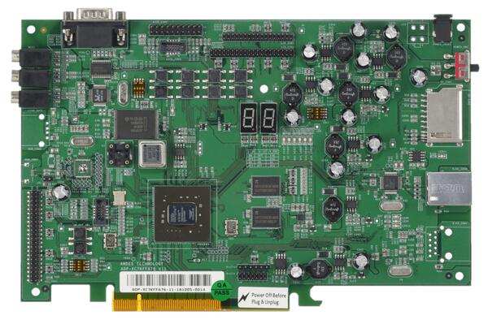
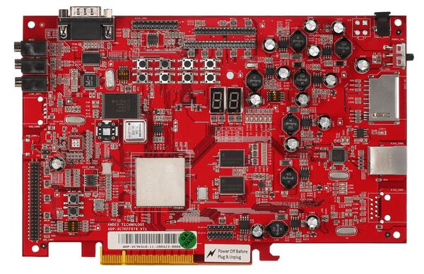
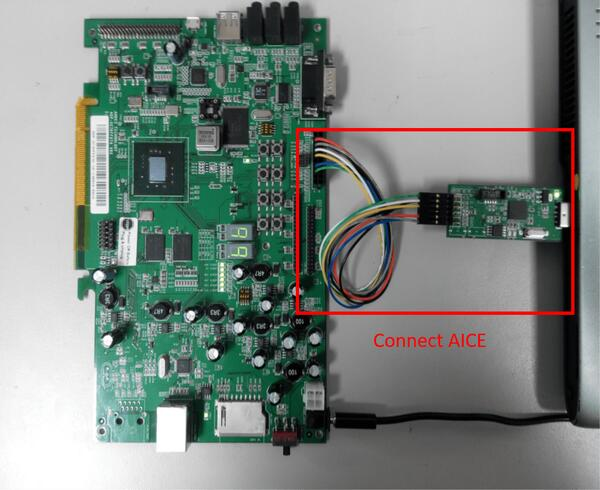

ADP-XC7K AE350
概述
ADP-XC7K AE350 开发板用于在基于 FPGA 的 ADP-XC7K 系列开发板上运行 AndeShape AE350 平台。
ADP-XC7K 系列是基于 FPGA 的开发与原型板，用于评估各种 AndesCore 处理器和 AndeShape SoC 平台 IP。AE350 是一个 RISC-V 平台，可将 AndesCore CPU 与一组基础外设 IP 集成在一起。
第一张图中绿色 PCB 的是 ADP-XC7K160，第二张图中红色 PCB 的是 ADP-XC7K410。


更多信息请访问 ADP-XC7K160/410 [1] 和 AndeShape AE350 [2] 网站。
硬件
ADP-XC7K AE350 平台集成了 1 ~ 4 核 32/64 位 60MHz RISC-V CPU、DSP、1GB RAM、Cache、SPI Flash 存储器、以太网控制器及其他外设。
ADP-XC7K AE350 平台提供以下硬件组件：
1 ~ 4 核 32/64 位 60MHz AndeStar v5 RISC-V CPU
1GB 板载 SDRAM
2MB SPI Flash 存储器（其中 1MB 可用于 XIP）
UART
I2C
SPI
GPIO
PWM
DMA
10/100 以太网 RJ45 端口
LCD 模块连接器
16KB I2C EEPROM
SD 存储卡槽
带 AC97 音频编解码器的麦克风输入（MIC-in）、线路输入（Line-in）和线路输出（Line-out）
支持的功能
adp_xc7k 开发板支持下列硬件功能。
说明
The list of supported hardware features was not generated. Run a full documentation build for the required metadata to be available.
连接与 IO
ADP-XC7K AE350 平台有 1 个 GPIO 控制器，提供 32 位 IO，负责引脚的输入/输出、上拉等功能。
GPIO 控制器到 ADP-XC7K 开发板引脚的映射：
GPIO 控制器 |
用途 / 开发板引脚 |
|---|---|
Push Buttons |
|
GPIO.0 |
SW1 |
GPIO.1 |
SW2 |
GPIO.2 |
SW3 |
GPIO.3 |
SW4 |
GPIO.4 |
SW5 |
GPIO.5 |
SW6 |
GPIO.6 |
SW7 |
7-Segment LED1 |
|
GPIO.16 |
7SEG1.A |
GPIO.17 |
7SEG1.B |
GPIO.18 |
7SEG1.C |
GPIO.19 |
7SEG1.D |
GPIO.20 |
7SEG1.E |
GPIO.21 |
7SEG1.F |
GPIO.22 |
7SEG1.G |
GPIO.23 |
7SEG1.DP |
7-Segment LED2 |
|
GPIO.24 |
7SEG2.A |
GPIO.25 |
7SEG2.B |
GPIO.26 |
7SEG2.C |
GPIO.27 |
7SEG2.D |
GPIO.28 |
7SEG2.E |
GPIO.29 |
7SEG2.F |
GPIO.30 |
7SEG2.G |
GPIO.31 |
7SEG2.DP |
GPIO pins |
|
GPIO.7 |
IDE_CON1.4 |
GPIO.8 |
IDE_CON1.6 |
GPIO.9 |
IDE_CON1.8 |
GPIO.10 |
IDE_CON1.10 |
GPIO.11 |
IDE_CON1.11 |
GPIO.12 |
IDE_CON1.12 |
GPIO.13 |
IDE_CON1.13 |
GPIO.14 |
IDE_CON1.14 |
GPIO.15 |
IDE_CON1.15 |
其他外设映射如下：
外设 |
用途 / 开发板引脚 |
|---|---|
SPI_1 |
内部连接到 SPI Flash |
SPI_2_CS |
IDE_CON1.37 |
SPI_2_MOSI |
IDE_CON1.36 |
SPI_2_MISO |
IDE_CON1.38 |
SPI_2_SCLK |
IDE_CON1.35 |
I2C_SDA |
J27.1 |
I2C_SCL |
J27.2 |
系统时钟
ADP-XC7K AE350 平台的内核时钟为 60MHz。
串口
ADP-XC7K AE350 平台有 2 个 UART。Zephyr 控制台输出默认分配到 UART2，默认设置为 115200 8N1。
编程与调试
说明
The list of supported runners was not generated. Run a full documentation build for the required metadata to be available.
要调试 Zephyr 应用程序或将其烧录到 Flash 中，需要将 Andes ICE 从主机连接到 ADP-XC7K 开发板，并在该主机上运行 Andes ICE 管理软件 ICEman。
连接 Andes ICE（AICE）
AICE 用于烧录和调试开发板。请按图示将 AICE 同时连接到 ADP-XC7K 开发板和主机。

更多信息请访问 AICE-MINI+ [3]、AICE-MICRO [4] 网站
构建
可以按常规方式构建应用程序。以下以 Hello World 应用程序为例。
# From the root of the zephyr repository
west build -b adp_xc7k/ae350 samples/hello_world
烧录
烧录之前，需要从 Andes Development Kit [5] 下载 ICEman（ice.zip）。如果要使用 XIP 模式（CONFIG_XIP=y），还需要下载 Flash 烧录工具（flash.zip）。
烧录和调试程序时，首先应运行 ICEman。
# Enable execute file permission of ICEman
chmod a+x ./ICEman
# Running the ICEman server
sudo ./ICEman -Z v5
备注
要以普通用户身份运行 ICEman 命令，需要安装 70-ndsusb-v1.rules udev 规则文件（通常将其放到 /etc/udev/rules.d 中，然后拔下 AICE 适配器并重新通过 USB 插入）。
如果 CONFIG_XIP=n，可以直接将程序（zephyr.elf）加载到 RAM 中并执行。
# Check the ICEman server is running
# Load the program into RAM and execute it
riscv64-zephyr-elf-gdb build/zephyr/zephyr.elf
(gdb) target remote :1111
(gdb) monitor reset halt
(gdb) load
(gdb) quit
如果 CONFIG_XIP=y，需要将程序（zephyr.bin）烧录到 Flash 存储器中再执行。
# Check the ICEman server is running
# Burn the program into flash and execute it
<FLASH>/bin/target_burn_frontend \
-P 4444 --unlock --verify --image=build/zephyr/zephyr.bin \
--algorithm-bin=<FLASH>/target_bin/target_SPI_v5_[32|64].bin
# Note:
# 1. Assume the flash burner is downloaded to <FLASH> directory
# 2. For algorithm-bin file, use target_SPI_v5_32.bin in RV32 platform and
# use target_SPI_v5_64.bin in RV64 platform
打开串口终端，设置如下：
波特率：115200
数据位：8 位
校验位：无
停止位：1
终端中应显示以下信息：
***** Booting Zephyr OS v2.4.0 *****
Hello World! adp_xc7k
调试
# Check the ICEman server is running
# Load and debug program
./riscv64-zephyr-elf-gdb build/zephyr/zephyr.elf
(gdb) target remote :1111
(gdb) monitor reset halt
(gdb) load
如果 CONFIG_XIP=y，请先按照烧录一节将程序烧录到 Flash 存储器中。然后可以用上述命令通过 GDB 调试程序，但不要执行 load 命令，因为程序已经位于 Flash 存储器中。